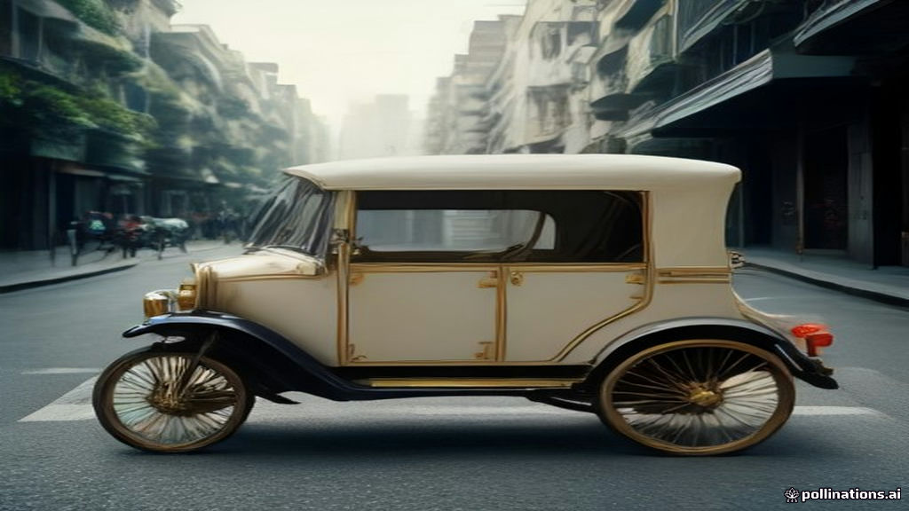

The air in the bustling Bengaluru office of Ola in 2013 buzzed with a mix of defiance and trepidation. A behemoth had just landed on Indian shores: Uber, the global ride-hailing giant, valued at over $3.5 billion, armed with massive funding, proven technology, and a playbook that had conquered dozens of countries. Against this formidable adversary stood Ola, a relatively tiny, homegrown startup founded by Bhavish Aggarwal, then a mere 100-person team operating in just 19 cities with only half a million dollars in the bank. By conventional logic, Uber should have swiftly dominated. But what unfolded was a classic David-vs-Goliath story, where the local challenger, by deeply understanding its terrain and its people, not only survived but thrived, ultimately outflanking the global powerhouse on its home turf.
The World Before
Before the arrival of smartphone-powered ride-hailing, India’s urban transportation landscape was, for many, a daily ordeal. Taxis often meant haggling over fares, inconsistent service, and long waits, especially during peak hours. The market was largely unorganized, fragmented, and lacked standardization. When Uber launched in Bengaluru in August 2013, it brought with it the promise of seamless, cashless travel – a tap on an app, a car arrives, and the payment is automatically deducted from a linked credit card. This model had worked wonders in the US and Europe, where digital payments were commonplace, and a focus on premium segments in major metros made perfect sense. Uber's initial strategy in India mirrored this global approach, starting with premium sedan services. For a country grappling with chaotic commutes, Uber’s polished product seemed like a breath of fresh air, albeit one built on Western assumptions that would soon prove challenging to the Indian reality.
The Crack
Ola, founded by Bhavish Aggarwal and Ankit Bhati in 2010, had a three-year head start, allowing it to gather crucial insights into the domestic market. As Uber made its confident entry, Ola recognized that its battle would not be won by replicating Uber's global playbook, but by rewriting it for India. Bhavish Aggarwal famously described their counter-strategy as "guerrilla warfare" against Uber's "carpet bombing." This involved a series of strategic pivots that leaned heavily into local realities:
Building for Cash: Uber’s global model was built on digital payments—credit cards and seamless electronic transactions. However, in India, a vast majority of the population transacted in cash, and many did not have credit cards or were uncomfortable with digital payments. Ola understood this fundamental truth from day one, integrating cash payments into its system. This seemingly "backward" move, according to tech purists, was a masterstroke that unlocked the market for millions of Indians. Uber, initially resistant to diverging from its global cashless model, took nearly two years to adapt, finally introducing cash payments in India in a phased manner starting May 2015. By then, Ola had already captured a significant portion of customers, with approximately 90% of its rides paid in cash by mid-2015. Uber's former CEO, Travis Kalanick, later admitted that accepting cash in India was "a very difficult decision to make" as it went against one of the company's "non-negotiables."
Speaking Their Language: India is a land of immense linguistic diversity. While English is spoken in urban centers, a significant portion of the population, especially drivers, communicates primarily in regional languages. Ola addressed this head-on by designing its app to support multiple Indian languages, including Hindi, Tamil, Telugu, Kannada, Bengali, Marathi, and Gujarati. This localization made the platform accessible and user-friendly for a wider pool of drivers and riders, reducing barriers to adoption. Uber was slower to implement multi-language support, a critical oversight in a market where language accessibility often dictates reach.
Going Beyond Metros: Uber initially concentrated its efforts on major metropolitan areas where ride-hailing seemed an obvious fit. Ola, however, adopted a broader geographic strategy, aggressively expanding into Tier 2 and Tier 3 cities. These smaller cities often had limited transportation options, presenting Ola with a significant opportunity to build driver networks and brand familiarity where Uber saw less immediate potential. By 2015, Ola claimed operations in over 100 Indian cities, significantly more than Uber's presence in around 27-29 cities at the time. To cater to areas with inconsistent internet connectivity and lower-end smartphones, Ola even launched a Progressive Web App (PWA) in 2017, which was 300-500 times smaller than its native app. This move dramatically increased mobile traffic from Tier 2 and Tier 3 cities by 68% and led to higher conversion rates in these crucial markets.
Embracing Local Transport: Ola further deepened its localization by integrating auto-rickshaws, a ubiquitous and affordable mode of transport, into its platform. In November 2015, Ola launched "Ola Auto" services across multiple cities, a move that tapped into existing transportation habits and expanded its service offerings beyond traditional cabs. This multi-modal strategy resonated deeply with Indian consumers seeking affordable and diverse travel options.
These "India-first" decisions allowed Ola to rapidly build a strong local advantage. By February 2018, RedSeer Consulting reported that Ola held approximately 58% market share by ride volume in India, while Uber held around 42%. Other estimates from July 2018 by Kalagato, cited by Quartz, placed Ola's market share at 56.2%. Ola had successfully outflanked the global giant by understanding the unique pulse of the Indian market.
What Happened Next
The competitive landscape between Ola and Uber continued to evolve, but Ola largely maintained its leadership position in India. While Uber continued to invest heavily, including a $1 billion commitment to India in 2015, it never achieved a dominant market share. By FY23, Ola's ride-hailing revenue stood at Rs 1,987 crore, significantly outperforming Uber's ride-hailing revenue of Rs 679 crore, making Ola's revenue approximately three times that of Uber's in this segment.
The Indian ride-hailing market, however, remains intensely competitive. Uber recently injected ₹2,921 crore ($330 million) into its Indian subsidiary in FY25, highlighting its ongoing commitment to the market, especially as new local players emerge. As of February 2026, a new player, Rapido, has surged ahead in overall ride volume, commanding approximately 50% of India's total rides, compared to Uber's 40%. In the four-wheeler segment, Uber holds about 45% market share, while Ola commands 25-30%. This indicates the dynamic nature of the market and the constant need for adaptation.
Beyond ride-hailing, Ola has diversified its ambitions. Around 2017-2018, while still competing with Uber, Bhavish Aggarwal embarked on a parallel venture: Ola Electric. Launched as a separate company in 2019, Ola Electric aims to make India a global hub for electric vehicles, starting with two-wheelers, a segment that accounts for 80% of vehicles sold in India. Ola Electric listed on the NSE and BSE in August 2024 through a Rs 6,145 crore IPO, demonstrating Ola's continued innovation and expansion beyond its core ride-hailing business.
Lessons to Take Away
- Context is King, Not Just Content: Uber brought a globally successful product, but its initial failure to adapt to India's unique payment preferences and infrastructure was a critical misstep. Ola's success underscores that even the best technology needs to be localized for local context, whether it's supporting cash payments, regional languages, or catering to lower-bandwidth users with lighter apps.
- The Power of Unsexy Markets: While global players often chase lucrative metro markets, Ola's aggressive expansion into Tier 2 and Tier 3 cities built a defensible moat. These "unsexy" markets, often overlooked, offered less competition and a large, underserved customer base willing to embrace new solutions, creating significant scale and brand loyalty.
- Integrate, Don't Dictate: Instead of trying to force a Western model onto India, Ola integrated seamlessly with existing behaviors and transportation types, like auto-rickshaws. This approach demonstrated a deeper understanding of the local ecosystem and a willingness to meet customers where they were, rather than expecting them to conform.
- Agility Trumps Resources: Despite Uber's vast funding and technological prowess, Ola's agility in pivoting its strategy and rapidly implementing India-specific solutions gave it a crucial edge. In fast-evolving emerging markets, the ability to quickly understand and respond to local challenges can be more valuable than sheer financial muscle.
References
- Ola vs. Uber: How Local Players Beat Global Giants — Medium article detailing Ola's strategies against Uber.
- A status update on the Uber-Ola war in India — Quartz article from 2022 providing historical context and market share.
- Tackled Uber's entry with guerrilla-like plan, says Ola — The Hindu article with Bhavish Aggarwal's quotes on strategy.
- Ola vs Uber India: Platform Competition Strategy — MarkHub24 case study on the competition, including market share, localization, and expansion details.
- Ola drives mobility for a billion Indians with Progressive Web App — Google Developers blog on Ola's PWA strategy for Tier 2/3 cities.